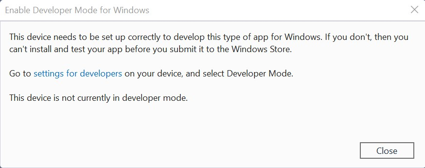
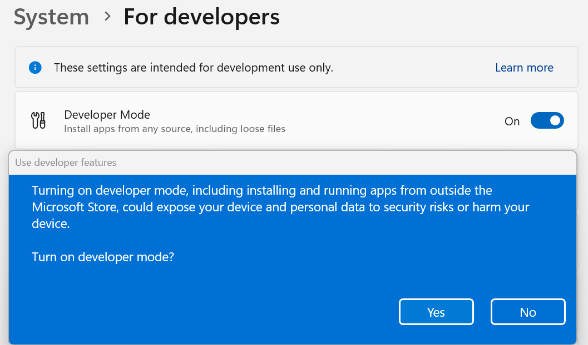

Enable your device for development
If you're writing software with Visual Studio, you will need to enable Developer Mode on both the development PC and on any devices you'll use to test your code.
Note
If you're using your computer for ordinary day-to-day activities (such as gaming, web browsing, email, or Office apps), there is no need to activate Developer Mode. If you're trying to fix an issue with your computer, check out Windows help.
Opening a Windows project when Developer Mode isn't enabled will either open the For developers settings page, or cause the following dialog to appear in Visual Studio:

If you see this dialog, select settings for developers to open the For developers settings page.
Note
You can go to the For developers settings page at any time to enable or disable Developer Mode. Simply enter for developers into the search box in the taskbar.
Activate Developer Mode
To enable Developer Mode, or access other settings:
- Open Windows Settings.
- Search for Developer settings or Go to Update & Settings then For developers.
- Toggle the Developer Mode setting, at the top of the For developers page
- Read the disclaimer for the setting you choose. Click Yes to accept the change.

Note
Enabling Developer mode requires administrator access. If your device is owned by an organization, this option may be disabled.
Developer Mode features
Developer Mode replaces the requirements for a developer license. In addition to sideloading, the Developer Mode setting enables debugging and additional deployment options. This includes starting an SSH service to allow deployment to this device. In order to stop this service, you need to disable Developer Mode.
When you enable Developer Mode on desktop, a package of features is installed, including:
- Windows Device Portal: Device Portal is only enabled (and firewall rules are only configured for it) when the Enable Device Portal option is turned on.
- Installs and configures firewall rules for SSH services that allow remote installation of apps. Enabling Device Discovery will turn on the SSH server.
For more information on these features (or if you encounter difficulties in the installation process) check out Developer Mode features and debugging.